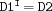
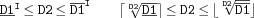
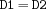
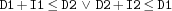
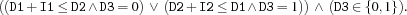

5.11 Miscellaneous Propagators
-
plus {FD.plus$D1$D2$D3}D3is the sum ofD1andD2. The propagator constrains its arguments asD1+D2=:D3.-
plusD {FD.plusD$D1$D2$D3}D3is the sum ofD1andD2. The propagator constrains its arguments asD1+D2=:D3.Does domain propagation, which can be very expensive.
-
minus {FD.minus$D1$D2$D3}D3is the difference betweenD1andD2. The propagator constrains its arguments asD1-D2=:D3.-
minusD {FD.minusD$D1$D2$D3}D3is the difference betweenD1andD2. The propagator constrains its arguments asD1-D2=:D3.Does domain propagation, which can be very expensive.
-
times {FD.times$D1$D2$D3}D3is the product ofD1andD2. Coreferences are exploited. If the store entailsD1 = D3, the propagator ceases to exist and the constraintD2=1is imposed. If the store entailsD2 = D3, the propagator ceases to exist and the constraintD1=1is imposed. If the store entailsD1 = D2, the propagator ceases to exist and a propagator is imposed instead, which constrains the variablesD1andD2as follows.
For notation see Section 5.7n.
-
timesD {FD.timesD$D1$D2$D3}D3is the product ofD1andD2.Does domain propagation, which can be very expensive.
-
power {FD.power$D1+I$D2}$D2is the result ofD1raised to the power ofI, i. e. . The propagator constrains the variablesD1andD2as follows.
For notation see Section 5.7.
-
divI {FD.divI$D1+I$D2}D2is the result of the integer division ofD1byI.A domain bound is discarded from the domain of one variable, if there is no value between the lower and upper bound of the domain of the other variable, such that the constraint holds. Additionally, if , the propagator is replaced by
I=1.modI{FD.modI$D1+I$D2}D2is the result ofD1modulusI.A domain bound is discarded from the domain of one variable, if there is no value between the lower and upper bound of the domain of the other variable, such that the constraint holds. Additionally, if , the propagator is replaced by
D1<:I. If the current upper bound ofD1is less thanI, the propagator is replaced byD1=D2.-
divD {FD.divD$D1+I$D2}D2is the result of the integer division ofD1byI.Does domain propagation, which can be very expensive.
-
modD {FD.modD$D1+I$D2}D2is the result ofD1modulusI.Does domain propagation, which can be very expensive.
-
max {FD.max$D1$D2$D3}D3is the maximum ofD1andD2.Its operational semantics is defined through
D3>=:D1 D3>=:D2
condis D3=<:D1
[] D3=<:D2
end
if D1=D2 then D3=D1
else skip
end-
min {FD.min$D1$D2$D3}D3is the minimum ofD1andD2. Its operational semantics is defined throughD3=<:D1 D3=<:D2
condis D3>=:D1
[] D3>=:D2
end
if D1=D2 then D3=D1
else skip
end-
distance {FD.distance*D1*D2+A*D3}creates a propagator for
 . May cut holes into domains. For example,
. May cut holes into domains. For example, {FD.dom 0#10 [X Y]}
{FD.distance X Y '>:' 8}will reduce the domains of
XandYto .
.The propagator is equivalent to
{FD.sumAC [1 ~1] [D1 D2] A D3}but is more efficient.-
less {FD.less*D1*D2}Equivalent to
D1<:D2.-
lesseq {FD.lesseq*D1*D2}Equivalent to
D1=<:D2.-
greater {FD.greater*D1*D2}Equivalent to
D1>:D2.-
greatereq {FD.greatereq*D1*D2}Equivalent to
D1>=:D2.-
disjoint {FD.disjoint*D1+I1*D2+I2}creates a propagator for . May cut holes into domains. For example,
{FD.dom 0#10 [X Y]}
{FD.disjoint X 9 Y 9}will reduce the domains of
XandYto.Its operational semantics is defined through
condis D1 + I1 =<: D2
[] D2 + I2 =<: D1
end-
disjointC {FD.disjointC*D1+I1*D2+I2D3}creates a propagator for

Its operational semantics is defined through
condis D1 + I1 =<: D2
D3 =: 0
[] D2 + I2 =<: D1
D3 =: 1
end-
tasksOverlap {FD.tasksOverlap*D1+I1*D2+I2D3}creates a propagator for
 .
. Its operational semantics is defined through
condis
D1 + I1 >: D2
D2 + I2 >: D1
D3 =: 1
[]
D1 + I1 =<: D2
D3 =: 0
[]
D2 + I2 =<: D1
D3 =: 0
end
Note that the disjunction is constructive. Informally, in case D3 is 0 the propagator behaves like FD.disjoint, i.e., in context of task scheduling two tasks must not overlap. Otherwise, if D3 is 1, the two tasks must overlap. This propagator is used in applications which shall be able to deal with overlapping tasks.